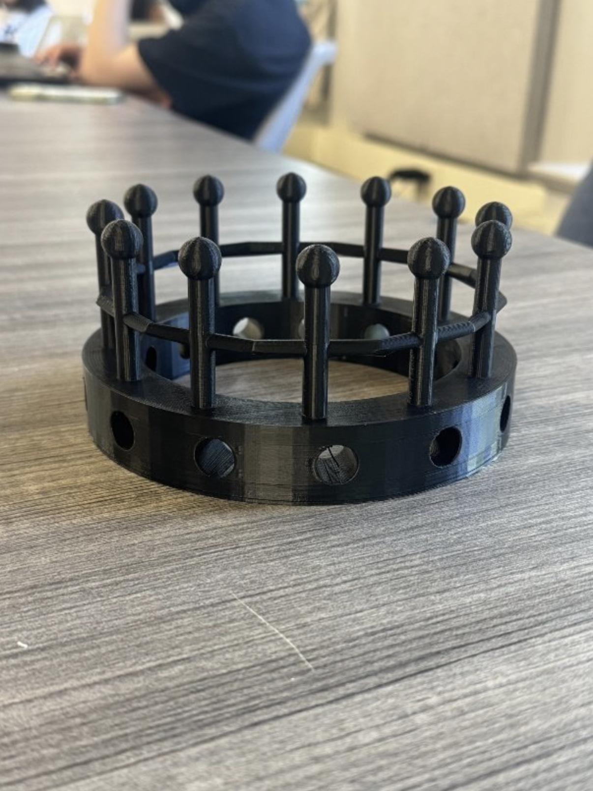

Project Name: We, the Crown
“We, the Crown” is an altered imperial crown that critiques
American political power by reimagining authority as collective
rather than singular. The crown’s concrete base represents the
shared weight carried by the American people, rendering it
unwearable and emphasizing the burden of power. Ultimately,
the work argues that power is supported by many and can
always be reclaimed by the collective.
